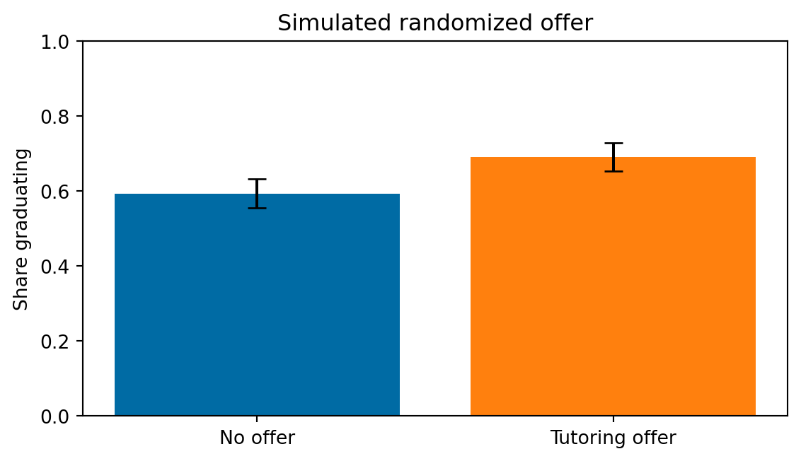
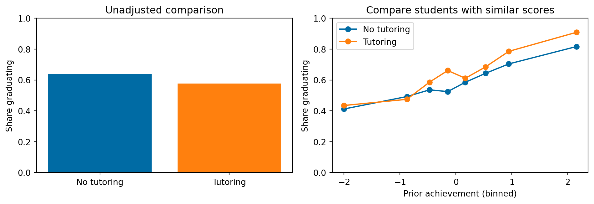
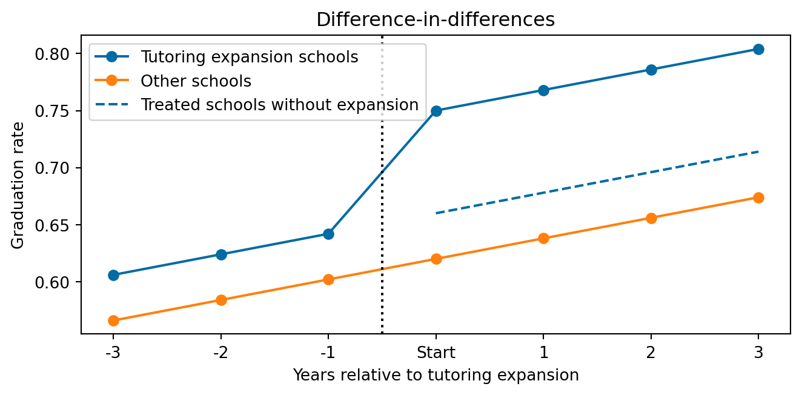
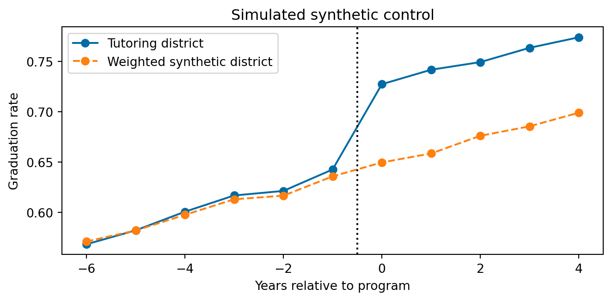
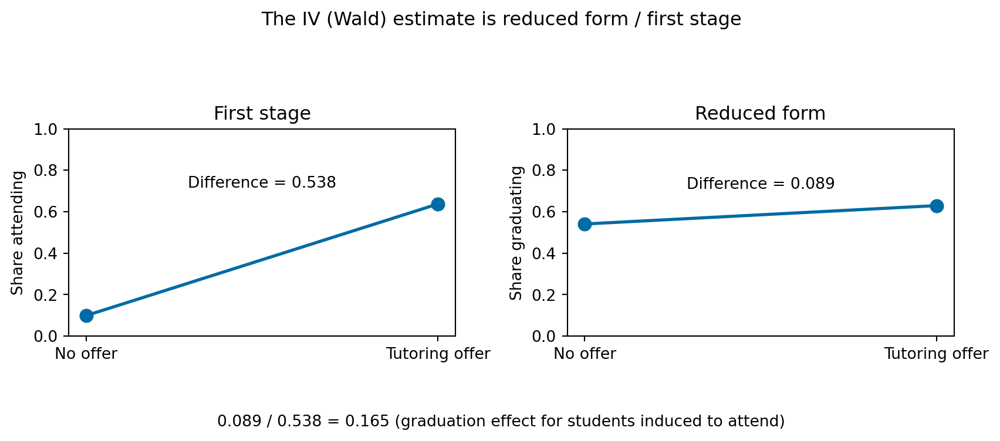
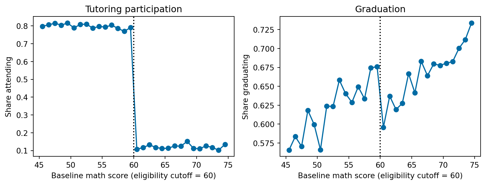
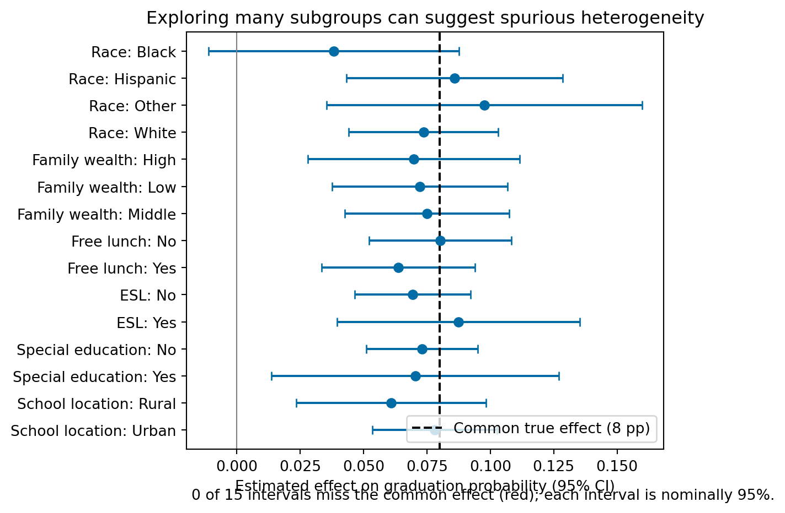

ECON526
\[ % \def\Er{{\mathrm{E}}} \def\En{{\mathbb{E}_n}} \def\cov{{\mathrm{Cov}}} \def\var{{\mathrm{Var}}} \def\R{{\mathbb{R}}} \newcommand\norm[1]{\left\lVert#1\right\rVert} \def\rank{{\mathrm{rank}}} \newcommand{\inpr}{ \overset{p^*_{\scriptscriptstyle n}}{\longrightarrow}} \def\inprob{{\,{\buildrel p \over \rightarrow}\,}} \def\indist{\,{\buildrel d \over \rightarrow}\,} \DeclareMathOperator*{\plim}{plim} \def\indep{{\perp\!\!\!\perp}} \]
Does tutoring increase graduation?
For tutored students, we observe graduation with tutoring.
We do not observe how those same students would have done without tutoring.
Every method below proposes a different way to build that counterfactual.
| Method | Compare… | Key idea |
|---|---|---|
| Experiment | randomly assigned groups | assignment breaks selection |
| Regression / matching | similar observed students | adjust for observed differences |
| Difference in differences | changes over time | comparison group captures the trend |
| Synthetic control | treated place vs weighted donor places | match the pre-treatment path |
| Instrumental variables | treatment shifted by an instrument | isolate a plausibly external nudge |
| Regression discontinuity | units just either side of a cutoff | near-cutoff units are comparable |
Each method relies on assumptions that make its comparison informative about a causal effect. The available data and institutional setting determine what method to use.
Offer of tutoring for randomly selected eligible students
No offer for other eligible students
Because the offer was random, there is no selection bias and the two groups provide a comparison for each other. \[ Y(1), Y(0) | D \, \Rightarrow\, \Er[Y(1) | D = 1] - \Er[Y(0) | D = 0] = \Er[Y(1) - Y(0)] \]
The graduation-rate gap estimates the effect of being offered tutoring.

Note
Randomization helps with selection into an offer. It does not eliminate concerns like attrition, noncompliance, or whether results apply to students in other districts.
Tutored students often had lower grades before tutoring.
Compare students with similar prior grades and backgrounds —using regression adjustment or matching.
Identification assumption: conditional on observed characteristics, tutoring is as good as randomly assigned. \[ Y(1), Y(0) \indep D | X \]
Question to ask: what important difference is still unobserved?

The district expands tutoring in some schools this year, but not in others. Compare graduation rates before and after the expansion:
Observed Outcomes | | Before | After | |—|—:|—:| | Expansion schools | \(Y_{i0}(0)\) | \(Y_{i1}(1)\) | | Other schools | \(Y_{j0}(0)\) | \(Y_{j1}(0)\) |
\[ \underbrace{(Y_{i1}(1)-Y_{i0}(0))}_{\text{treated school's change}} -\underbrace{(Y_{j1}(1)-Y_{j0}(0))}_{\text{comparison school's change}} \]
Note
Key assumption: parallel trends. Without the expansion, graduation rates in the two sets of schools would have changed similarly. \[ \underbrace{\Er[\textcolor{red}{Y_{i1}(0)} - Y_{i0}(0) | D_{i1}=1]}_{\text{\textcolor{red}{unobserved}}} = \underbrace{\Er[Y_{i1}(0) - Y_{i0}(0) | D_{i1}=0]}_{\text{observed}} \] - Implies: \[ \begin{align*} \text{DiD} = & \Er[Y_{i1}(1) - Y_{i0}(0) | D_{i1}=1] - \Er[Y_{i1}(0) - Y_{i0}(0) | D_{i1}=0] \\ = & \Er[Y_{i1}(1) - Y_{i0}(0) | D_{i1}=1] - \Er[\textcolor{red}{Y_{i1}(0)} - Y_{i0}(0) | D_{i1}=1] \\ = & \Er[Y_{i1}(1) - \textcolor{red}{Y_{i1}(0)} | D_{i1}=1] = \text{ATT} \]

Suppose one district introduces a tutoring program across all its schools at once, and other districts do not. What would graduation rates have been without it?

Return to the tutoring lottery: some students offered a place do not attend, while a few students not offered find tutoring elsewhere.
Lottery offer \(\longrightarrow\) tutoring attendance \(\longrightarrow\) graduation
IV estimates an effect for students whose tutoring attendance responds to the offer—not necessarily for everyone.

A school offers tutoring to students whose baseline math score is below 60.
Compare students scoring just below and just above 60—not students far apart in preparation.
Why might that work?
Students very close to the cutoff may be similar. If graduation rates would otherwise change smoothly around 60, a jump in graduation identifies the effect of eligibility. If eligibility affects graduation only by changing tutoring attendance, the cutoff can also identify a local effect of tutoring for students whose attendance it changes.

An average effect can hide important differences:
Is tutoring more effective for students with weaker prior preparation?
Can the method identify effects for those groups? Were the groups chosen before looking at results?
I.e. interested in conditional treatment effects, \(\Er[Y(1) - Y(0) | X]\)
Searching many subgroups can produce impressive-looking patterns by chance. Treat discovered heterogeneity skeptically.
Simulate a randomized tutoring study where the true effect is the same in every group. Explore 15 categories anyway: some nominal 95% confidence intervals may miss the common effect just by chance.

Briing a focused causal question
Your proposal should include:
As we study each method, ask: Could its identifying assumptions be credible for my question and data?